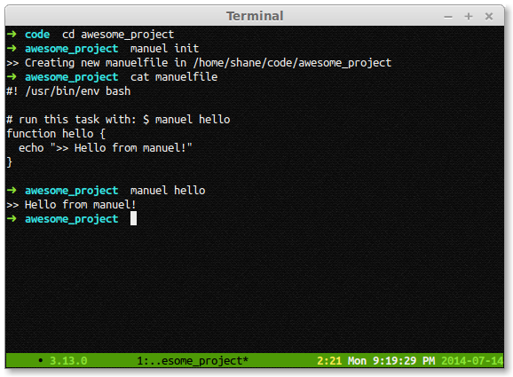

Because automation should be easy to use and compose, easier than handling a directory full of individual shell scripts.
Because manuel makes bash easier to work with, you can automate your project without introducing complex dependencies.
If you know how to do it by hand in a bash terminal, you already know how to do it with manuel.

Just follow the instructions on our Github page.